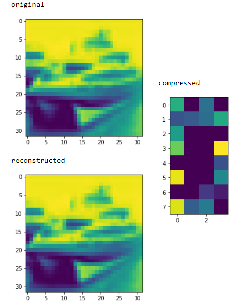
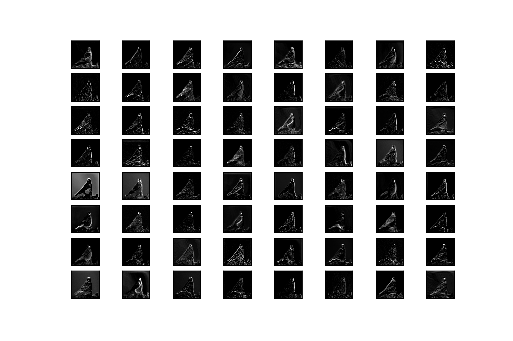
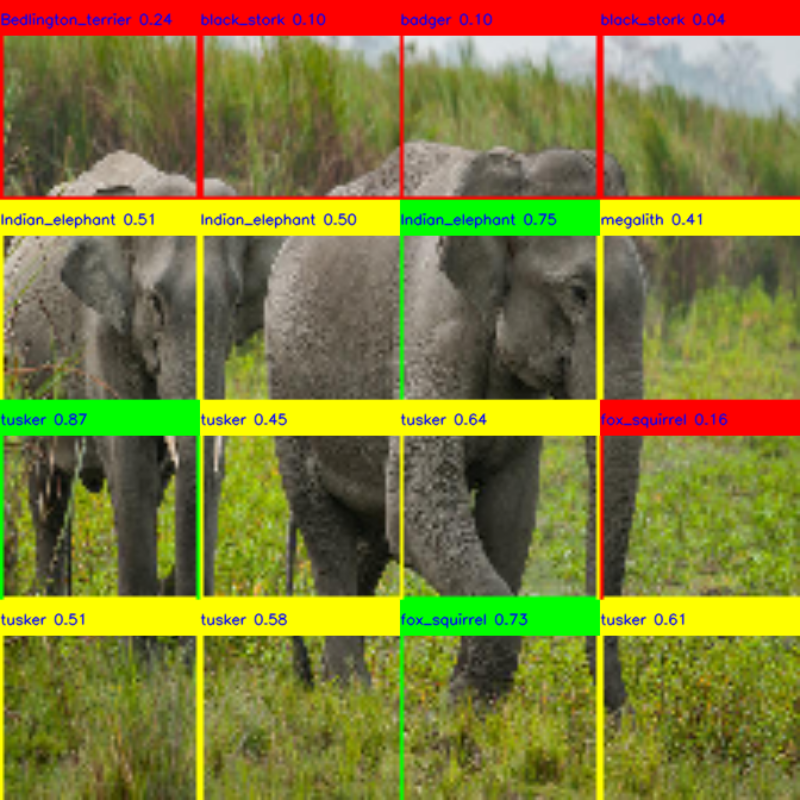
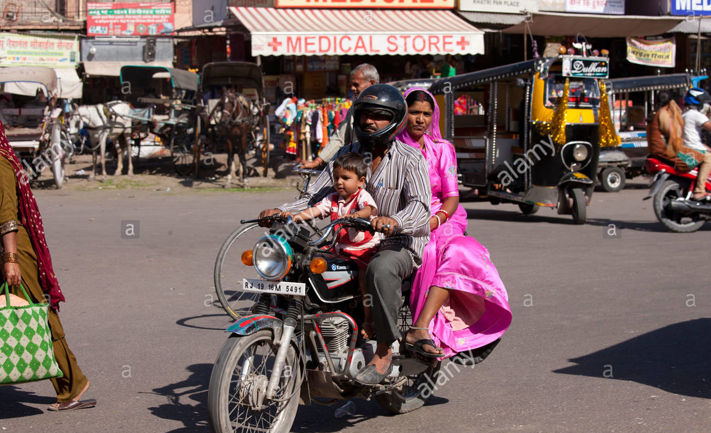
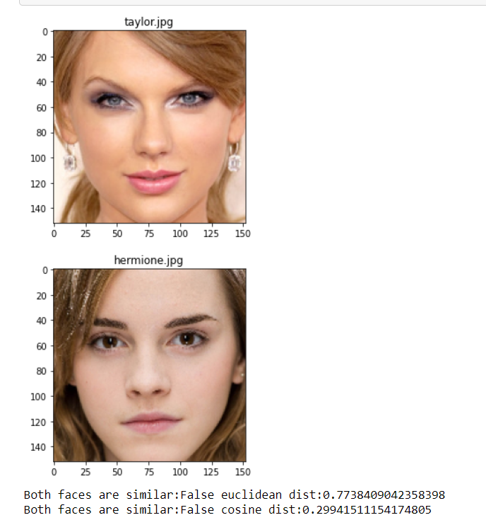

-

Denoising Face Images - AutoEncoders
Using autoencoders generated data in latent space and then applying unsupervised learning to it. Denoising the Image and Finding Anomalies. Blurry CCTV Images were improved for recognition. Generating the latent space features from Encoder Network and using that to apply unsupervised learning to separate the features into clusters for the same set of features.
-

Filter Visualizer
Understanding Trained Model - for PyTorch, Tensorflow Models Feature maps closer to the input capture a lot of fine details - as we progress deeper in the model, feature maps show less detail.
-

Unsupervised AI using AutoEncoders (Tensorflow, Python)
Inspired by YOLO, using pre-trained weights and image splitting, Here I am localizing and classifying the objects to understand in-depth how it works.
-

Scene Captioning using LSTM (Python, PyTorch)
Given an Image, Instead of randomly telling the name of objects - Structured way of arrangement words for the scene description was developed. Encoder-Decoder, Attention Network, Transfer Learning and Beam Search.
-

Face Recognition
Used multiple feature extraction algorithms - ArcFace, SphereFace, DeepID, DeepFace.